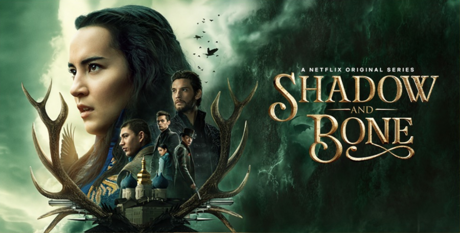
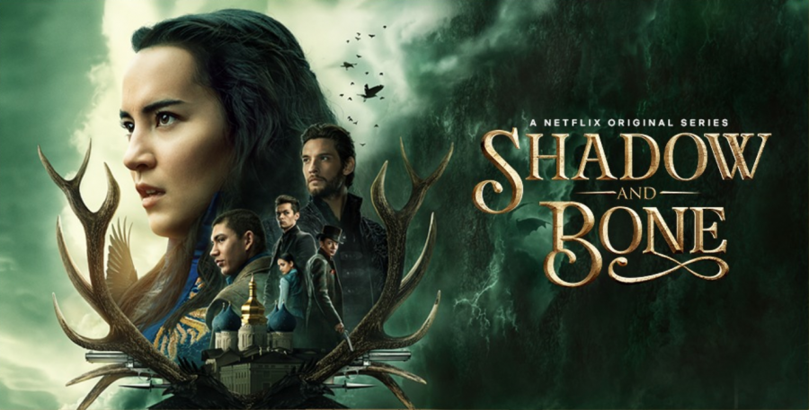

The Last Kimdom
Enquanto Alfredo, o Grande, defende seu reino de invasões nórdicas, Uhtred - um saxão criado por vikings - planeja reivindicar o que é seu por direito. Assista agora a nova temporada de The Last Kimdom que está imperdível.
Séries Relacionadas
 
